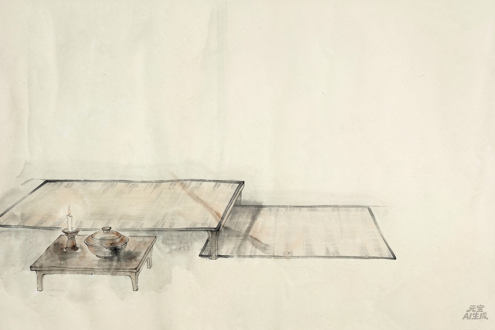
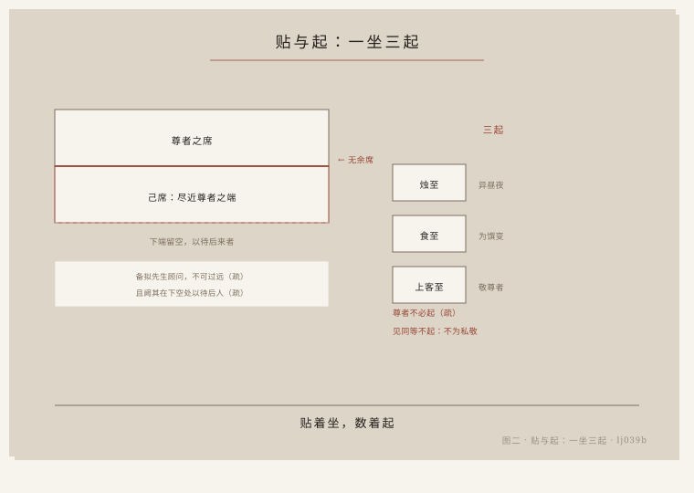

曲礼上 · 一·四十一 · 第 39 课
这一节讲侍坐时的坐次与起身：在所尊敬的人旁边侍坐，不要在自己与尊者之间空出余席，要尽量贴近尊者那一端；见同等的人来不起身；烛来要起，食来要起，上客来要起。
说什么事：侍坐于所尊敬，毋余席，必尽其所近尊者之端；见同等不起；烛至起；食至起；上客起。
落在哪一层：教。上节讲应答，这节讲坐得离尊者多近，以及什么时候必须起身。
为何编在此位：坐次定，起止才有据；一静一动，合成侍坐之礼。
【经】侍坐於所尊敬，毋餘席，必盡其所近尊者之端。見同等不起。燭至起。食至起。上客起。
毋余席 郑注：「必尽其所近尊者之端，为有后来者。」疏：「己必坐于近尊者之端，勿得使近尊者之端更有空余之席。」
见同等不起 郑注：「不为私敬。」疏：「虽见己之同等后来，不为之起，任其坐在下空处。」
烛至起 郑注：「异昼夜。」
食至起 郑注：「为馔变。」
上客起 郑注：「敬尊者。」疏：「尊者见之则起，故侍者宜从之而起。然食与烛至起，则尊者不起。」
在所尊敬的人旁边侍坐，不要留出余席，要挨近尊者那一端坐。见到同等的人来，不起身。烛送来时起身，食送来时起身，上客来时起身。
一节分两半：坐要「贴」，起要「准」。贴着尊者，是备问；起身只三种，是不滥敬。
第一层 毋余席：坐近，是为了备问 郑注的理由有二，疏说得全：「欲得亲近先生，似若扶持然，备拟先生顾问，不可过远；且拟后人之来，故阙其在下空处以待之。」——近的一端给自己，远的一端留给后来的人。
第二层 「必尽其所近尊者之端」：一寸也不虚 不是「坐得近些」，是「不留空」。疏说「勿得使近尊者之端更有空余之席」——尊者身旁那一段席面，不许空着。
第三层 见同等不起：不拿私敬打断公敬 郑注四字「不为私敬」。朋友来了，你起身迎他，就把尊者搁在一边了。礼在这里的取舍很清楚：尊者之前，私交要收。
第四层 三起：烛、食、上客 烛至是昼夜之变，食至是馔之变，上客至是尊者要起。三条都不是「尊敬来人」，而是「事变了」。疏又补一句要紧：「食与烛至起，则尊者不起」——你起，尊者不必起。
与今日何干 今日陪长辈、陪领导，常坐得远远的「不打扰」；来宾一到，又忙着起身招呼。此节反过来：坐要贴，起要有数。贴身是备问，起身是随事。
| 左 | 右 |
|---|---|
| 侍坐于所尊敬，毋余席 | 为有后来者 |
| 必尽其所近尊者之端 | 备顾问，且阙下以待后人 |
| 见同等不起 | 不为私敬 |
| 烛至起 | 异昼夜 |
| 食至起 | 为馔变 |
| 上客起 | 敬尊者；尊者不起 |

